Dans le cadre de mon alternance au sein du service informatique de l’EBI, j’ai participé à la mise en place d’une base de connaissances Intranet sur SharePoint.
L’objectif de cette réalisation était de centraliser la documentation informatique de l’établissement afin de faciliter l’accès aux procédures, aux tutoriels et aux informations techniques utiles aux utilisateurs et au service informatique.
Cette base documentaire constitue une première version fonctionnelle du site. Elle servira de socle pour les futures évolutions, notamment l’amélioration de l’interface et l’adaptation des contenus selon les profils d’utilisateurs.
Objectifs
Mettre en place un espace SharePoint dédié à la documentation informatique interne.
Structurer une bibliothèque documentaire claire et exploitable.
Classer les documents par dossiers afin de faciliter la recherche d’informations.
Valoriser les procédures déjà rédigées au sein du service informatique.
Créer une page d’accueil simple avec des liens rapides vers les outils courants de l’EBI.
Préparer une base de connaissances évolutive, destinée à être enrichie progressivement.
Environnement technique
Plateforme : Microsoft SharePoint Online
Environnement : Microsoft 365
Interface : navigateur web
Type de site : site SharePoint Intranet
Rôle attribué : propriétaire du site pour la configuration et l’organisation des contenus
Intervenants : service informatique de l’EBI et prestataire réseau DEiiS
Documents intégrés : procédures, tutoriels, bonnes pratiques et documentations techniques
Exemples de procédures
Avant la mise en place de la base de connaissances, j’avais déjà rédigé plusieurs procédures destinées à accompagner les utilisateurs dans l’utilisation du matériel et des outils numériques de l’établissement.
Ces documents ont servi d’exemples concrets pour alimenter le futur espace documentaire. Ils montrent le type de contenu attendu dans la base de connaissances : des procédures visuelles, structurées et directement exploitables par les utilisateurs.
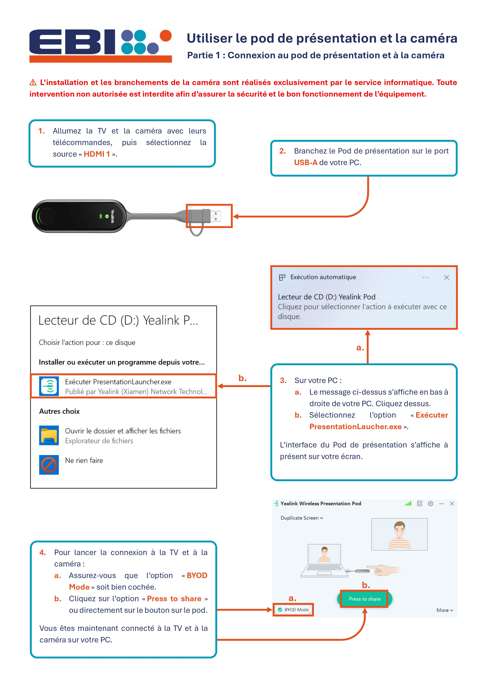
Cadrage du projet
Mon responsable informatique m’a fourni un document de cadrage afin de définir les attentes du projet, les contenus à intégrer et les évolutions envisagées pour le futur site Intranet.
Ce cadrage m’a permis d’identifier le périmètre de mon intervention : organiser l’espace documentaire, préparer la page d’accueil, intégrer les documents et construire une première version exploitable du site.
La configuration avancée de la sécurité et l’ajout des groupes d’utilisateurs en lecture seule seront ensuite pris en charge par le prestataire DEiiS.
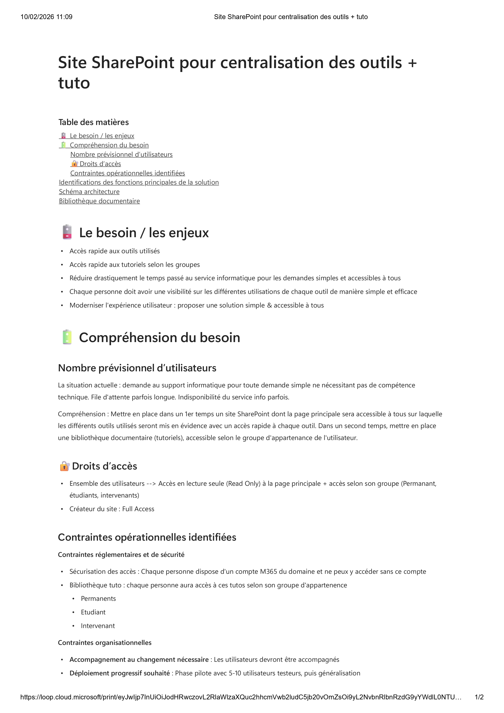
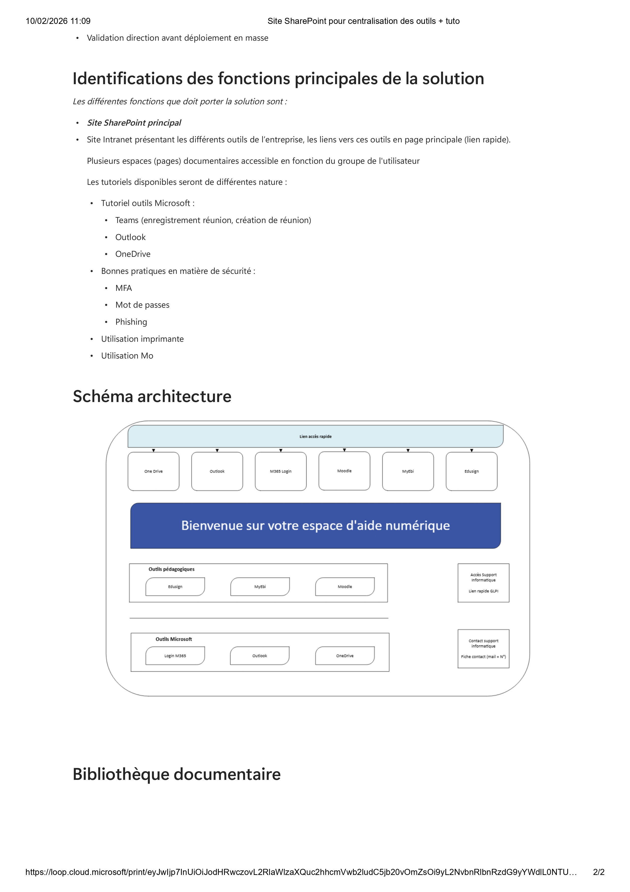
Point de départ : site SharePoint vide
Le prestataire réseau DEiiS a créé le site SharePoint et m’a attribué le rôle de propriétaire afin que je puisse effectuer les premières configurations.
La capture du site vide permet de montrer l’état initial de l’espace avant mon intervention. À ce stade, aucune page personnalisée, aucun lien rapide et aucune bibliothèque documentaire structurée n’étaient encore en place.
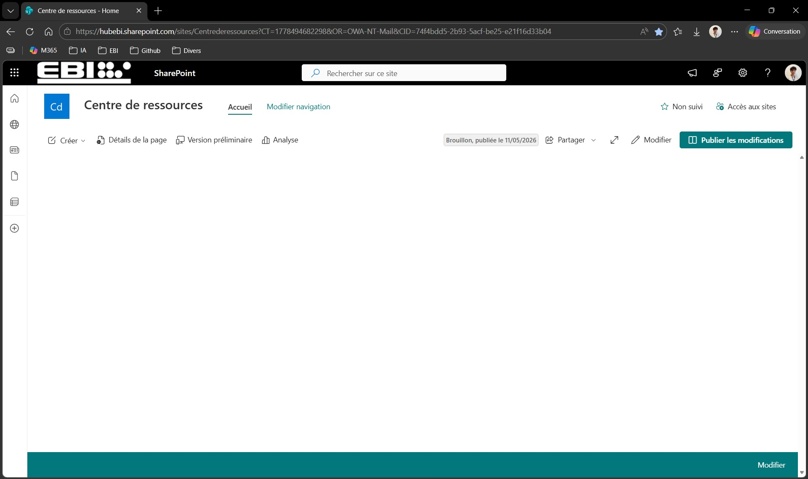
Édition de la page d’accueil
J’ai commencé par éditer la page d’accueil du site afin de lui donner une structure claire et identifiable.
J’ai ajouté un titre, deux phrases d’introduction et des liens rapides vers les outils courants utilisés à l’EBI. Cette étape permet aux utilisateurs d’identifier immédiatement l’objectif du site et d’accéder plus facilement aux ressources principales.
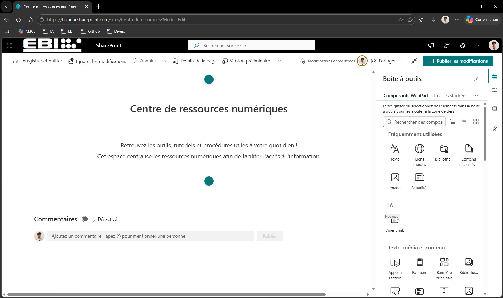
Création de la bibliothèque documentaire
J’ai ensuite créé une bibliothèque documentaire dédiée à la base de connaissances.
Dans cette bibliothèque, j’ai créé plusieurs dossiers afin de classer les documents par thème. Cette organisation permet de séparer les procédures, les tutoriels, les bonnes pratiques et les documentations techniques.
L’objectif était d’obtenir une arborescence simple, compréhensible et suffisamment évolutive pour accueillir de nouveaux documents au fil du temps.
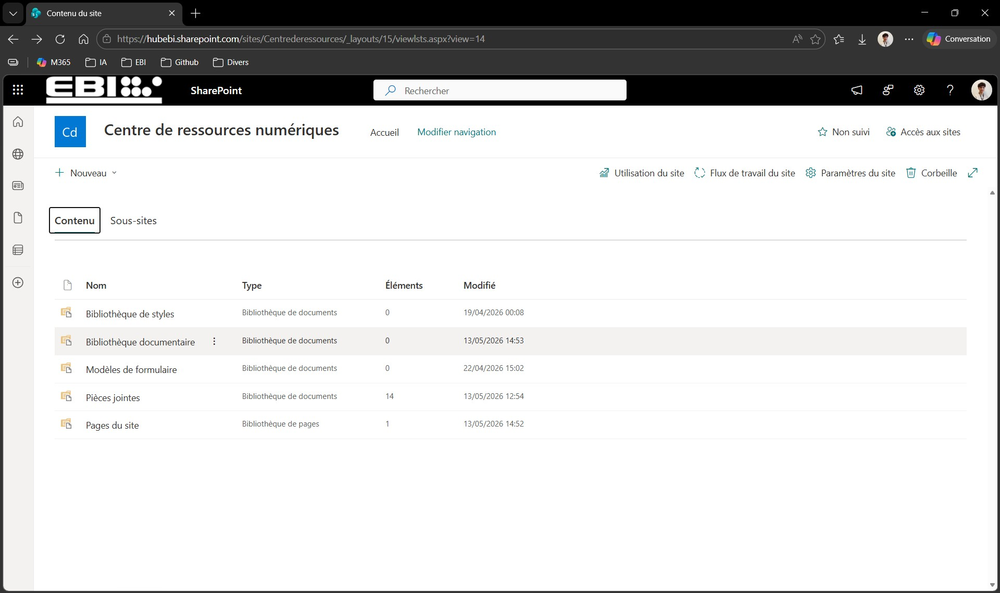
Ajout de la bibliothèque sur la page d’accueil
Après la création de la bibliothèque documentaire, je suis retourné dans l’édition de la page d’accueil afin de l’intégrer directement sous les liens rapides.
Cette intégration permet aux utilisateurs d’accéder aux dossiers documentaires sans avoir à rechercher manuellement la bibliothèque dans SharePoint.
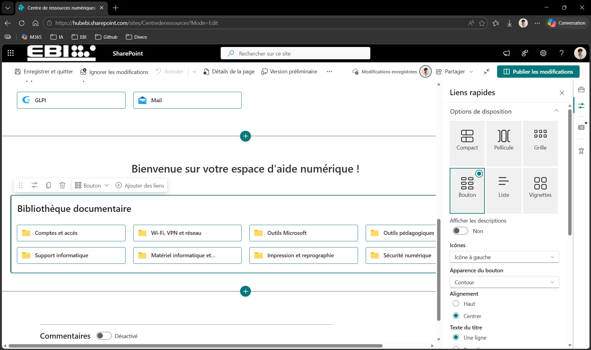
Importation des documents
Une fois la structure de la page d’accueil finalisée, j’ai importé les documents dans les dossiers correspondants.
J’ai veillé à classer les fichiers de façon cohérente afin que chaque document soit retrouvé rapidement par le service informatique ou par les utilisateurs concernés.
Pour éviter de surcharger la présentation, seules quatre captures sont intégrées ci-dessous afin d’illustrer l’importation de documents dans plusieurs dossiers de la bibliothèque.
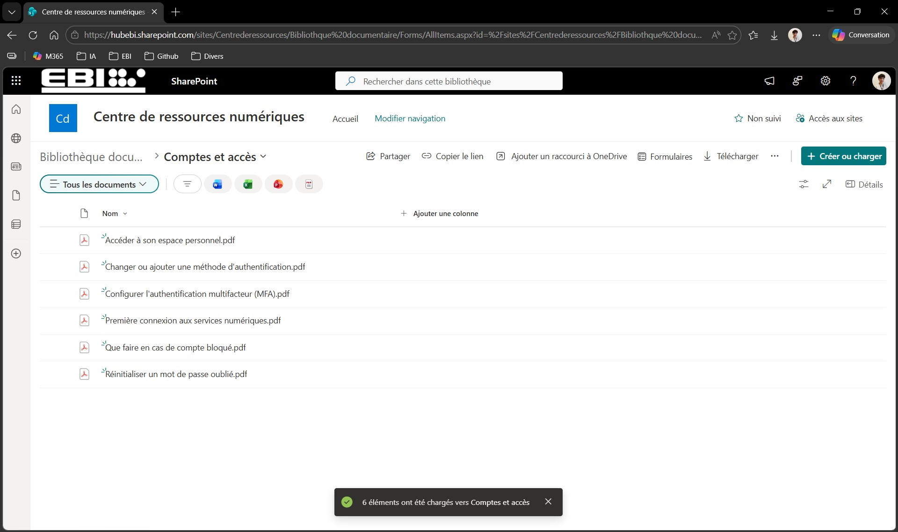
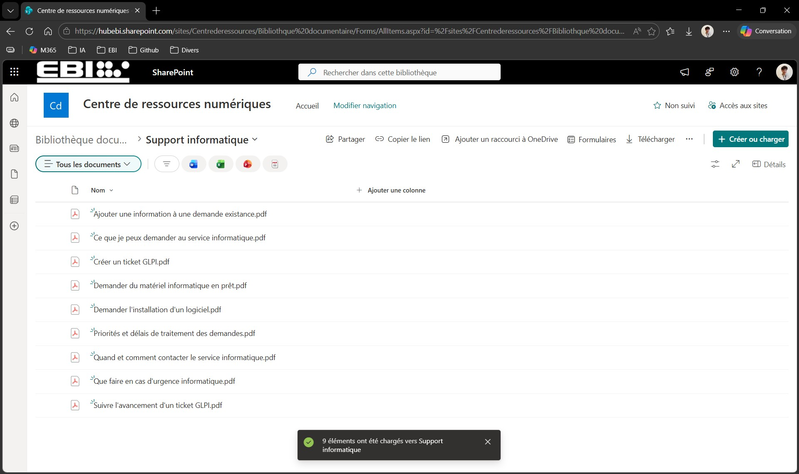
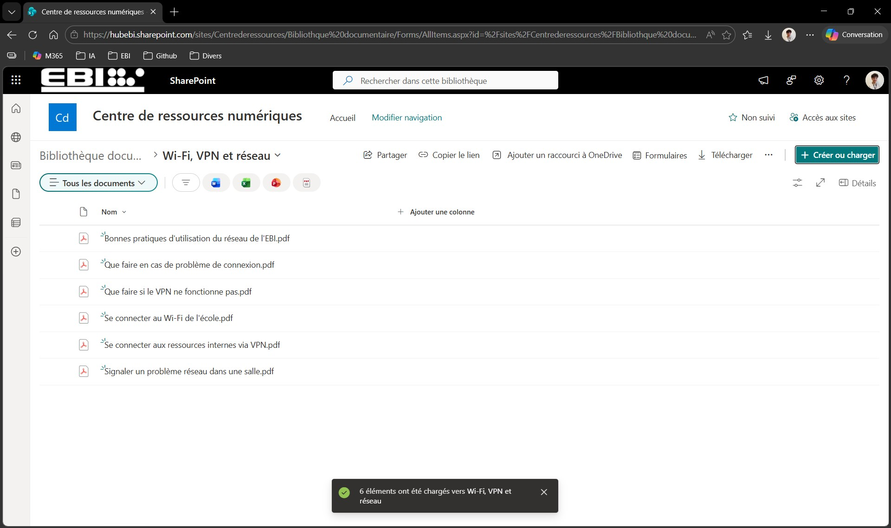
Résultats obtenus
La première version de la base de connaissances Intranet a été mise en place conformément aux attentes définies avec mon responsable.
Page d’accueil personnalisée avec un titre, une introduction et des liens rapides.
Bibliothèque documentaire créée dans SharePoint.
Dossiers de classement structurés pour organiser les contenus.
Documents importés et triés dans les dossiers correspondants.
Procédures internes valorisées dans un espace centralisé.
Socle documentaire prêt pour la mise en place des droits d’accès par le prestataire DEiiS.
Le site sera amélioré par la suite, notamment avec une interface plus dynamique et une expérience adaptée aux différents profils d’utilisateurs. Pour cette première étape, le site reste commun à l’ensemble des utilisateurs concernés.
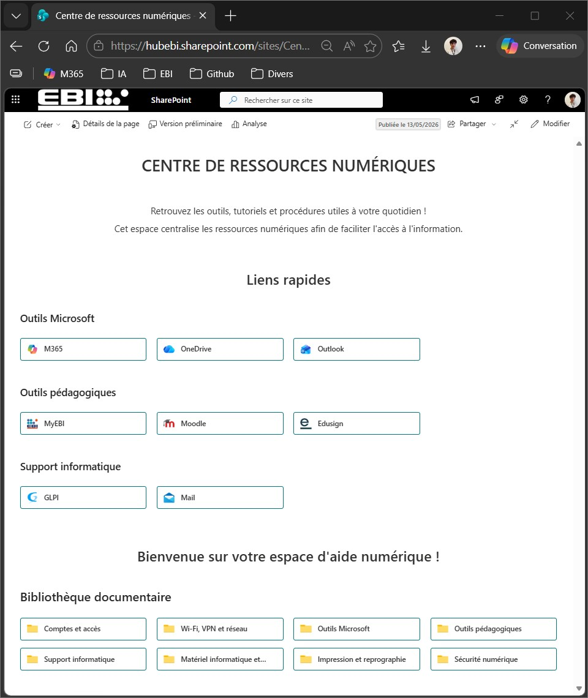
Compétences mobilisées
Gérer le patrimoine informatique
Organisation et valorisation de la documentation informatique interne dans une bibliothèque SharePoint structurée.
Répondre aux incidents et aux demandes d’assistance et d’évolution
Mise à disposition de procédures permettant de faciliter le support utilisateur et de répondre plus rapidement aux demandes récurrentes.
Développer la présence en ligne de l’organisation
Contribution à la création d’un espace Intranet SharePoint destiné à centraliser les ressources informatiques de l’établissement.
Travailler en mode projet
Prise en compte d’un document de cadrage, respect du périmètre défini et coordination avec le responsable informatique et le prestataire DEiiS.
Mettre à disposition des utilisateurs un service informatique
Création d’un point d’accès centralisé permettant aux utilisateurs de consulter les procédures et documentations utiles.
Organiser son développement professionnel
Développement de compétences sur SharePoint, la structuration documentaire, la rédaction de procédures et la valorisation d’une réalisation professionnelle dans le portfolio.
Bilan personnel
Cette réalisation m’a permis de mieux comprendre l’importance d’une documentation centralisée dans le fonctionnement quotidien d’un service informatique.
J’ai appris à structurer un espace SharePoint, à organiser une bibliothèque documentaire et à rendre les contenus plus accessibles pour les utilisateurs.
Ce projet m’a également permis de travailler à partir d’un cadrage professionnel, en tenant compte des besoins exprimés par mon responsable et des interventions prévues par un prestataire externe.
Cette base de connaissances constitue une première étape importante. Elle pourra être enrichie progressivement et devenir un véritable outil de support, de capitalisation des connaissances et d’amélioration continue pour l’EBI.